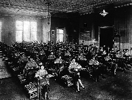

|  |
Please send comments and contributions via e-mail to c. . The scope of the society includes such issues as environmental, health and safety implications of technology; engineering ethics and professional responsibility; history of electrotechnology; technical expertise and public policy; peace technology; and social issues related to energy, information technology and telecommunications. SSIT publishes a quarterly journal, IEEE Technology and Society Magazine, and sponsors periodic conferences entitled The International Symposium on Technology and Society (ISTAS). Membership in SSIT is open to all IEEE members and student members. |